Ping-pong scheduling for attention
zhuo/mha_flydsl, flydsl/
(the file names below refer to that directory).1. The problem ping-pong solves
Attention per KV tile is two GEMMs with a softmax in between:
S = Q · KT # MFMA (matrix core) P = softmax(S) # VALU / transcendental (vector ALU) O += P · V # MFMA
Within one wave these are data-dependent, so a single wave alternates: matrix core busy, then VALU busy, then matrix core again. Each unit idles while the other runs. On CDNA a SIMD has separate issue paths for MFMA and VALU, so if two waves on the same SIMD are in opposite phases, the MFMA of one overlaps the softmax of the other.
Ping-pong = deliberately skew two wave groups by half an iteration and use s_barrier to keep them locked in that skew,
so on every SIMD one wave is always in its MFMA burst while its partner is in its softmax.
2. The schedule (paper Figure 1)
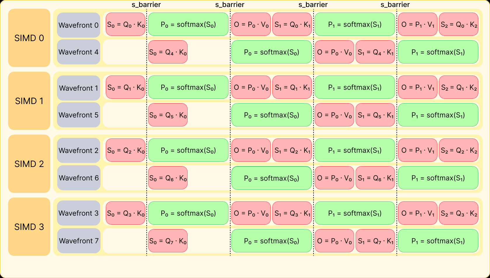
s_barrier.
Wavefronts 0–3 start with S₀=Q·K₀; wavefronts 4–7 start one phase later, so in every column each SIMD has one red and one green.
How to read it
- Rows: each SIMD hosts two wavefronts (0&4, 1&5, 2&6, 3&7). Same SIMD, same matrix core, same VALU — this is the contended resource being time-shared.
- Columns: the dashed
s_barriers are phase boundaries. Between two barriers the wave runs exactly one thing: an MFMA burst or a softmax. - Skew: the second group does nothing but wait for the first group's
S₀in the first phase, then runs one phase behind forever. Steady state, every barrier interval has (group A in MFMA, group B in softmax) or the reverse. - Hand-off: when A finishes its MFMA burst it has produced S; it hits the barrier and starts softmax, and B (which just finished softmax) starts its MFMA burst using the P it produced.
Interactive: step through it
3. How the FP8 kernel realises it
| Knob | Value | Where |
|---|---|---|
| Workgroup | 8 waves (512 threads), BLOCK_M=256 query rows ⇒ 32 rows/wave | traits.py |
| Wave groups | g0 = waves 0–3, g1 = waves 4–7 (is_g0 = wave_id < NUM_WAVES//2). One of each per SIMD. | fp8.py |
| KV tile | BLOCK_N=128, head_dim=128, FP8 32x32x64 MFMA (needs gfx95x) | traits.py |
| LDS | 2 K slots + 2 V slots (NUM_BUF_K = NUM_BUF_V = 2), one LDS global each so the backend can prove they don't alias | fp8.py SharedStorage |
| Loads | Direct-to-LDS DMA. g0 streams K (issued inside its QK burst), g1 streams V. Each group only fills the tile the other needs next. | pipeline.py k_dma_passes / v_dma_passes |
| Priorities | s_setprio(1) during the MFMA burst, s_setprio(0) during softmax, so the MFMA wave wins the shared issue slot | MFMA_PRIO=1, SOFTMAX_PRIO=0 |
| Unroll | UNROLL=4 (multiple of both buffer counts ⇒ every LDS slot in the body is a compile-time constant) | traits.py |
| Softmax | VALU-only by design: max frozen on tile 0, Schraudolph exp2, fp8 pack; the L denominator is a "ones column" folded into the next MFMA burst; a watchdog + rollback repairs rare tiles that exceed the frozen max | op_softmax.py |
The loop body, per group
# g0_step ut.wait_vmcnt() ut.phase_barrier() # ① enter MFMA phase ut.set_wave_priority(MFMA_PRIO) o, l = self.pv(...) # O += P_i . V_i s = self.qk(..., dma=K) # S_{i+1} = Q . K_{i+1} # + K DMA for tile i+2 ut.sched_barrier() ut.set_wave_priority(SOFTMAX_PRIO) ut.phase_barrier() # ② enter softmax phase m, p, l, o, l = self.softmax(s, ...)
# g1_step m, p, l, o, l = self.softmax(s, ...) # VALU, overlaps g0's MFMA ut.wait_vmcnt() ut.phase_barrier() # ① enter MFMA phase ut.set_wave_priority(MFMA_PRIO) o, l = self.pv(...) s = self.qk(..., dma=V) # V DMA issued here ut.sched_barrier() ut.set_wave_priority(SOFTMAX_PRIO) ut.phase_barrier() # ②
Both bodies contain the same two barriers; g1 just starts its iteration at the softmax instead of the MFMA burst. Because s_barrier
is workgroup-wide, g0 and g1 hit the same barrier instance with opposite work on either side — that is the whole mechanism. The skew is established in the prologue:
g0 does QK₀ then a phase_barrier() before softmax; g1's iter0 has the matching barrier up front (see the "pairs with the barrier in ..." comments in pipeline.py).
Details that make it actually work
phase_barrier()=sched_barrier(0); s_barrier; sched_barrier(0). Without the fences the machine scheduler sinks VALU into the next MFMA phase and the skew collapses (half of g0's softmax migrated in one experiment, per the docstring inutils.py). It also avoidsgpu.barrier's implicitlgkmcnt(0); waits are placed by hand.- Priority is the arbiter: both waves on a SIMD are ready to issue;
s_setpriodecides that the MFMA wave wins, so the matrix core never starves while the softmax wave fills VALU gaps. - MFMA bursts chain without a drain: each burst's tail reads the next burst's first operands from LDS (
PREFETCH_DEPTH=2: the MFMA at unit u uses operands read two MFMAs ago, hiding oneds_readlatency). - Cross-group buffer hazards are resolved by the phase alternation itself (g0 and g1 are never in the same phase), except iteration 0 which has no leading barrier — hence the explicit extra barrier there.
- Softmax is moved off the critical path: the softmax scale rides in the QK MFMA's e8m0 operand, the L reduction runs on the matrix core ("ones column"), so the VALU phase is just max / exp2 / pack and fits inside the partner's MFMA burst.
- exp2 without a transcendental: the Schraudolph trick. An IEEE float's bit pattern is roughly an affine function of its log2: the exponent field holds the integer part, the mantissa the fraction. So writing the integer
223·x + 223·(127 − ε)and reading it back as an f32 gives ≈ 2x (exact at integers, linear in between; ε ≈ 0.058 minimises the RMS error, ~1.8%). In the kernel the whole exp becomes one affine map plus one dtype conversion: the 223·log2e·scale factor is folded into the QK MFMA's scale, the bias minus the frozen max is added once per row, and the exp itself is a singlev_cvt_u32_f32whose bits are reinterpreted as f32, then packed to fp8. The saturating convert maps negative patterns (and NaN) to 0, so it doubles as the clamp and the mask. The error is small next to fp8's own quantisation error of P.p = bitcast_f32( cvt_u32( 2^23·log2(e)·scale·s + 2^23·(127 − ε) − m ) ) # m = frozen row max in the same units; p ≈ exp(scale·s − max)For the derivation, the choice of proxy width (U32 / U16 / U8), the frozen max with rollback and the accuracy measurements, see Wu, Korhonen & Carabano Bravo, Fused-Softmax for efficient quantized attention, arXiv 2611.09225 (§4.1–4.2).
4. What it looks like on hardware (WaveScope trace)
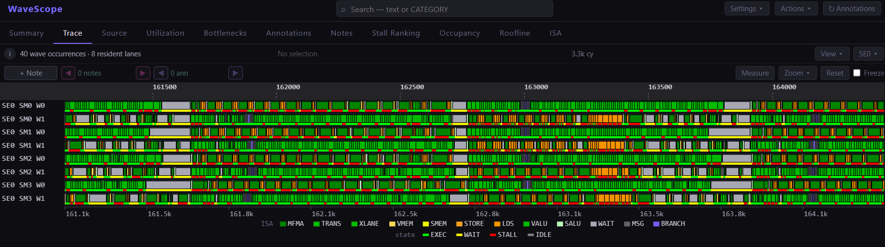
What to look for
- All four SIMDs look the same, i.e. the skew is uniform across the workgroup.
- W0 and W1 on one SIMD have complementary texture. Where W0 shows a long, dense MFMA run, W1 shows a fragmented region (short VALU/LDS-heavy segments); a few cycles later they swap. That is Figure 1's red/green alternation, measured.
- Grey WAIT gaps line up with the barriers. A wave that finished its phase early sits in
s_barrieruntil its partner group arrives; the length of those gaps tells you which phase is the longer one and therefore which unit is the bottleneck. - Ideal result: the MFMA lane is never idle on any SIMD. Any visible gap in the busy wave's MFMA stream is time ping-pong failed to hide: either the softmax phase is longer than the MFMA phase (VALU-bound), or a wait on
ds_read/vmcntleaked into the burst.
Tip: a long Stall on an instruction is an issue stall, not necessarily latency — read the gating s_waitcnt first.
5. Summary
- Split the 8 waves into two groups so each SIMD hosts one wave of each.
- Skew the groups by one phase (prologue barrier), then run the same two-barrier loop body.
- Barriers keep the skew;
sched_barrierfences keep the compiler from undoing it;s_setpriolets the MFMA wave win issue. - Make the softmax VALU-only and the MFMA bursts self-chaining (prefetch, DMA from the partner phase) so neither phase stalls on memory.
- Verify with a trace: complementary W0/W1 texture, MFMA lane saturated, barrier waits short.
Ping-pong on the HSTU backward pass
aiter/ops/flydsl/kernels/hstu/)1. The math
HSTU attention replaces softmax with a pointwise SiLU gate. There is no row normalisation, so every row is independent and the backward needs no
row statistics (no lse, no row sums) — simpler than FlashAttention's backward.
Forward
A = M ⊙ silu(Z) / N M = causal / window / target mask, N = max_seq_len (constant)
O = A V
One shared sigmoid gives both the value and the derivative: this is the "gate", and it is the only VALU/transcendental work in the kernel
(v_exp_f32 + v_rcp_f32 per score element).
Backward (given dO)
dV = (1/N) · PT dO GEMM1
dA = dO VT GEMM2
dS = M ⊙ silu′(Z) ⊙ dA gate derivative; 1/N deferred
dK = (α/N) · dST Q GEMM3
dQ = (α/N) · dS K GEMM (dq kernel)
Per (Q-tile, KV-tile) pair this is five GEMMs and one gate, with S = QKT and dA both feeding the gate:
S = Q KT (GEMM0) ──┐
├──▶ gate (VALU: exp2, rcp, mask) ──▶ P, silu'(Z)
dA = dO VT (GEMM2) ──┘ │
▼
dV += PT dO (GEMM1) <── P dS = silu'(Z) · dA · mask
dK += dST Q (GEMM3) <── dS dQ += dS K (GEMM4)
P and dS are never written to memory. They are MFMA accumulator fragments, gated in registers, repacked to bf16, and fed straight back in as MFMA operands. On CDNA an accumulator fragment reinterpreted as an A operand reads as its transpose, so the Pᵀ / dSᵀ the chained GEMMs need cost nothing — no shuffle, no LDS round-trip.
2. Two kernels, two ownerships
Rows of the L×L matrix are queries, columns are keys; causality means query q only sees keys ≤ q (lower triangle). dV/dK reduce over queries, dQ reduces over keys, so they want opposite ownership.
dvdk (hstu_attention_bwd.py) | dq (hstu_attention_bwd_dq.py) | |
|---|---|---|
| Produces | dV, dK | dQ |
| Owned (resident in regs) | K, V + dV-acc + dK-acc — ~288 VGPR at d=128 | Q, dO + dQ-acc — ~128 VGPR at d=64 |
| Streamed (via LDS) | Q, dO, plus transposed copies Qᵀ, dOᵀ for the B operands | K, V — no transpose tiles |
| GEMMs / tile | 4 (S, dA, dV, dK) | 3 (Sᵀ, dAᵀ, dQ) |
| Gate | silu and silu′ (needs P) | silu′ only |
| Layout trick | S = Q·Kᵀ; reinterpret accumulator → Pᵀ, dSᵀ | computes Sᵀ = K·Qᵀ on purpose so the accumulator reinterprets into dS (A operand of dQ = dS·K) |
| Cross-WG reduction | none | none |
Both kernels compute S, dA and the whole gate. That duplicated work is what step 2 removes.
3. The baseline and why it leaves performance on the table
Shipping configs (B=1024 H=4 N=16384 d=64 hstu t=300): dvdk tuned (192,16,4) = 305.7 ms, dq tuned (128,32,2,2) = 228.0 ms, full backward 530.4 ms.
Each SIMD hosts two co-resident waves (from two workgroups, or 2 waves of one). They are in lockstep on the shared barrier: they idle together and burst MFMA together,
contending for one matrix core. Measured for dvdk: 27.9% matrix-core busy, 50.7% of all stall in s_waitcnt.
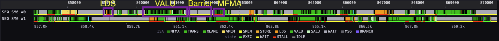
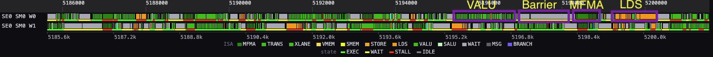
4. Step 1 — ping-pong each kernel separately
Apply the page-1 recipe: 8 waves in one workgroup, two groups (g0 = waves 0–3, g1 = waves 4–7), one of each per SIMD, held half an iteration apart by s_barrier.
Each barrier interval is one of two phases:
- Phase M (matrix): the 48-MFMA burst, its LDS operand feed, the Q/dO DMA, the transpose build, the mask.
- Phase V (vector): the fused SiLU / SiLU′ gate. No memory operations at all.
While g0 is in M, g1 is in V, and vice versa — the matrix core and the VALU pipe are busy simultaneously.
Structural points (each load-bearing)
- Chained GEMMs consume the previous tile's fragments. GEMM1/GEMM3 at trip i use P[i−1], dS[i−1], so GEMM0/2 of tile i and GEMM1/3 of tile i−1 form one contiguous MFMA burst. Zero-seeding the packs makes trip 0 self-starting and the extra trip the drain — no peeled iteration.
- Work split between groups: g0 stages Q and builds Qᵀ, g1 stages dO and builds dOᵀ; both run all four GEMMs on their own disjoint KV rows, so no cross-wave reduction.
- Transpose build lives in phase M, not V. A tile written in one group's V phase is published at the next barrier, but the partner's consuming M phase overlaps that very V phase: an unsynchronised cross-group RAW race. Building in M puts one barrier between write and earliest partner read.
- Row-major Q/dO are 3-deep, fired two tiles ahead. At depth 2 the load only gets the tail of one M phase, which brings back the
vmcntstall the kernel exists to remove. - Prologue skew must come before the DMA fence: each group stages only its own tensor but trip 0 reads both, so the publish fence has to be the last thing either group does. Wrong order was invisible at the tuned 384 shape (0/63 runs) and nondeterministic at 256 (36/63).
The first ping-pong version: repaying the 8-wave entry fee
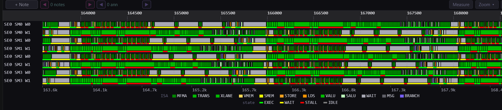
max(M, V), and in this version the gate phase V was the longer one (2232 cy vs 2012 cy for M), so the other wave waits on it. That is what the tricks below remove.| kernel | original (shipping tuned) | ping-pong, first version | H100 CUTLASS target |
|---|---|---|---|
| dvdk | 305.7 ms (192,16,4) | 293.3 ms (−4.1%) (384,16,8) | n/a (CUTLASS runs one backward kernel) |
| dq | 228.0 ms (128,32,2,2) | 209.3 ms (−8.2%) (512,16,8,2) | n/a |
| dvdk + dq | 533.7 ms | 502.6 ms (−5.8%) | 384.4 ms original is 1.39x of it, first ping-pong 1.31x |
B=1024, H=4, N=16384, d=64, hstu t=300, MI300X; each kernel timed alone. H100 target: cuda_hstu_mha_autograd (CUTLASS) full backward, B=1024, H=4, hstu mask, 300 targets, measured on an H100 80 GB; a different machine, so indicative only.
The entry fee in numbers (the same kernels at the ping-pong geometry, before any skew): dvdk 305.7 → 353.7 ms (+15.5%), dq 228.0 → 265.4 ms (+16.7%). The first ping-pong versions above (293.3 and 209.3 ms) are what is left after the skew has repaid that fee and more.
Going to one workgroup per CU removes the co-resident workgroups that were covering each other's barrier / waitcnt stalls (~60% of dvdk stall was there).
Ping-pong has to repay this before it shows any win; 8 waves per WG is forced, since two waves per SIMD inside one barrier domain is the only way to hold them in opposite phases. Shrinking BLOCK_M to compensate is far worse (256 = +30%, 128 = +62% for dvdk): reuse beats residency.
The tricks that took dvdk from 293 to ~213 ms
The narrative: the barrier interval is max(M, V), so only the longer phase matters. At first that was V (gate 2232 cy vs M 2012 cy), so the first work is cutting VALU.
Then it turned out the gate was latency-bound (a chain of dependent transcendentals), where fewer instructions does not help and "obvious" packing hurts.
Once the chains were broken it became instruction-bound (1808 cy with only 249 cy stall against 1045 cy of pipe work) and op-count mattered again.
| group | what was done | rough effect on kernel time |
|---|---|---|
| Schedule | Port the FP8 ping-pong skeleton (page 1); chain the GEMMs so tile i's S/dA GEMMs and tile i−1's dV/dK GEMMs form one MFMA burst; zero-seeded packs instead of a peeled iteration; take the prologue skew before the DMA publish fence. | 305.7 → 293 ms |
| Gate: fewer VALU ops | Algebra and constant folding: fold α (and −log2e) into K once in the prologue so the MFMA emits the scaled score; defer 1/N to the epilogue; rewrite silu′ to share terms with silu; compare indices directly for the mask; bf16 pack as a byte select (v_perm_b32) since truncation is exact. | ~9% |
| Gate: break dependency chains | The biggest lever. Keep the gate off the packed-FP32 datapath: a packed op is a join that waits for both halves' producers (here two quarter-rate v_exp_f32), so it serialises independent chains. Pin the critical ops to scalar shapes (inline asm / legacy multiply intrinsics) so the compiler cannot re-fuse them; end with zero v_pk_* in the loop. | ~14% |
| MFMA burst / LDS feed | Issue all operand reads up front so the burst tail is one descending lgkmcnt drain; interleave independent GEMM pairs to double the spacing on each accumulate chain; lay out the transposed tiles so each lane's operands are one contiguous run (ds_read_b128); swizzle LDS tiles whose row stride hits the bank period. | ~3% |
| Correctness under the skew | Ping-pong exposed ordering bugs the lockstep kernel hid: publish-before-fence in the prologue, out-of-range DMA leaving LDS unwritten (stale NaN × masked 0), ring buffers indexed by value instead of by step. Each was caught with NaN poisoning and bitwise A/B against a twin kernel. | a few % paid for correctness |
| Tried and rejected | Moving the mask into phase M (VGPR cap), inverting s_setprio, pinning reciprocals with sched_barrier, GEMM orders other than pairwise, swizzling a tile whose XOR address math landed in the VALU-bound phase. | neutral or slower |
Common thread. A ping-pong phase is a tight latency problem, not a throughput one: pin instruction shapes so the scheduler can't re-fuse them (inline asm, fmul.legacy, sched_group_barrier),
judge every change by A/B latency (not ISA counts: a passing accuracy run doesn't prove a timing hazard is covered), and expect the hazard recognizer to be blind inside inline asm (you add your own s_nop).
Result of the tricks: optimised dvdk and dq ping-pong
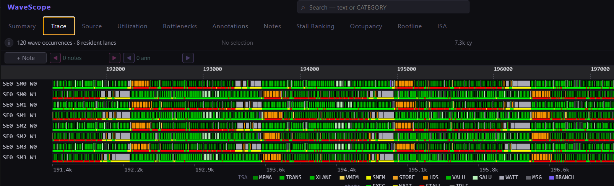
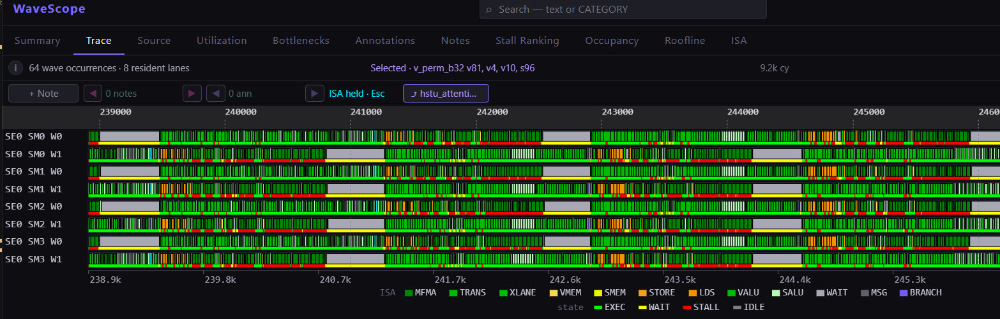
| Per kernel (ms) | original | ping-pong, first version | ping-pong, optimised | speed-up (optimised vs original) | H100 CUTLASS target |
|---|---|---|---|---|---|
| dvdk | 305.7 | 293.3 | 213 | 1.43x | n/a |
| dq | 228.0 | 209.3 | 206 | 1.11x | n/a |
| dvdk + dq | 533.7 | 502.6 | 419 | 1.27x | 384.4 original 1.39x of it, optimised pp 1.09x |
The remaining gap to the H100 target (419 vs 384.4 ms) is what the fusion step goes after.
Observation from the two traces: the ping-pong dvdk gain (1.43x) is much larger than dq's (1.11x). A plausible (unmeasured) reason: dq starts from a lighter kernel (128 resident VGPR vs ~288 for dvdk, no transpose tiles), so there was less stall to hide.
5. Step 2 — fuse dV/dK/dQ into one kernel
Observation. After step 1 the backward is two ping-pong kernels that each recompute S = QKᵀ, dA = dO Vᵀ and the whole gate. Fusing them removes one pass over Q/K/V/dO and one gate.
Problem. dvdk loops over Q (KV-owned); dQ needs a sum over KV for each query row. Fuse dQ into dvdk and a workgroup only sees its own KV slice, so each workgroup produces a partial dQ that has to be summed across all KV-tile workgroups — a split-K reduction.
KV tile 0 ─ WG0 ─▶ dQ_part[0] ─┐
KV tile 1 ─ WG1 ─▶ dQ_part[1] ─┤
KV tile 2 ─ WG2 ─▶ dQ_part[2] ─┼─▶ dq_reduce kernel (sum partials, cast to bf16) ─▶ dQ
... ┤ reads an fp32 scratch (tens of GB!)
KV tile T ─ WGT ─▶ dQ_part[T] ─┘
(dV, dK: unchanged, single-writer plain stores)
So the fused path = fused kernel + reduce kernel, and the reduction is fully exposed (it has to finish before the next pass overwrites the scratch), i.e. a standing cost to tune.
Why split-K and not atomics
| primitive | measured |
|---|---|
| global fp atomic add | ~0.40 TB/s ceiling (a bytes wall, independent of width / contention) |
| plain global store | 3.56 TB/s — 8.8x |
ds_add_f32 for the intra-WG cross-wave sum | 55x a ds_write_b32 (737 vs 13 ns/op/wave); fused kernel 1915 ms → 409 ms after replacing it with per-wave slots summed in phase V |
Same lesson at both levels: an fp atomic is a wall — use disjoint slots and an explicit sum.
Making the fused kernel a ping-pong kernel
Same M / V skeleton as the dvdk ping-pong, plus the dQ work, placed so it hides under the partner's phase. The tricks fall into four groups:
| group | what was done |
|---|---|
| Geometry | BLOCK_M=256 rather than 384: the larger tile halves the partial-dQ volume but the extra dQ state (~46 VGPR) pushes it into spills, which costs more than the partials save. |
| No atomics, no LDS round-trips | Cross-wave dQ sum through private per-wave LDS slots summed in phase V (instead of ds_add_f32, which alone was 4.7x of the whole kernel); the layout changes dQ = dS·K needs are done in registers with an identity MFMA (feed a B-layout fragment as the A operand, Xᵀ·I = Xᵀ, bit-exact) instead of an LDS write/fence/read. |
| Hide the extra work under the partner phase | Issue the flush reads mid-gate so the VALU covers their latency; keep LDS reads wide (lane-contiguous layout so the backend still emits ds_read_b128); interleave the dQ staging writes with the dQ GEMM via sched_group_barrier (source order alone does not survive the scheduler). |
| Trim the burst | Smaller rolling operand-prefetch window so the reads scatter through the MFMA burst; scalar branches (the group id is wave-uniform) instead of dummy writes to trash rows. |
Fused kernel alone — progression
The reduction kernel and the host side
dq_reduceis bandwidth-bound: vectorised accesses (16 × dword → 4 × dwordx4) bought only 0.8% (50.8 → 50.4 ms, 3.42 TB/s ≈ 92% of a 3.73 TB/s proxy). Only moving fewer bytes helps, and partial volume is fixed by geometry and the fp32 dtype — the reduction is the lever that remains.- kv-chunking into G passes bounds the (otherwise tens-of-GB) scratch;
reduce(g)must finish beforefused(g+1). Per-call planning cost cut from 26 ms to 6.8 ms (emptynotzeros, noempty_cache()on the fast path). - Sliding windows supported via a window-aware reduction that reads an element only if the fused pass wrote it (
select, not multiply: unwritten slot may hold NaN).
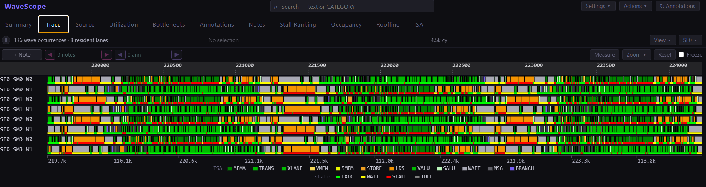
Result: fused (+ reduce) vs the split dvdk + dq pair
Measured on a second MI300X node (bf16, N=16384, d=64; 2026-10-20), both arms in the same run, ms. "split" is the original dvdk + dq pair (the benchmark's split arm is the default dispatch, fused=False; it is not the ping-pong pair, which was opt-in and
was removed when the fused path shipped). "fused" is the fused kernel + dq_reduce (PR #6175); CK for reference.
“faster” = CK / fused − 1 (resp. CK / split − 1).
| mask | B | H | split (original) | fused | fused vs split | CK | fused faster than CK | split faster than CK |
|---|---|---|---|---|---|---|---|---|
| causal | 1024 | 4 | 483.7 | 377.9 | 1.28x | 498.1 | +31.8% | +3.0% |
| causal | 1024 | 8 | 979.8 | 770.8 | 1.27x | 1000.6 | +29.8% | +2.1% |
| causal | 120 | 4 | 57.5 | 45.0 | 1.28x | 61.7 | +37.1% | +7.3% |
| causal | 120 | 8 | 117.6 | 89.3 | 1.32x | 120.4 | +34.9% | +2.4% |
| hstu | 1024 | 4 | 489.4 | 379.4 | 1.29x | 506.1 | +33.4% | +3.4% |
| hstu | 1024 | 8 | 989.8 | 772.8 | 1.28x | 1017.2 | +31.6% | +2.8% |
| hstu | 120 | 4 | 58.5 | 45.5 | 1.29x | 63.1 | +38.6% | +7.9% |
| hstu | 120 | 8 | 118.1 | 89.8 | 1.32x | 122.7 | +36.7% | +3.9% |
The “fused vs split” column is computed from the two columns beside it (1.27–1.32x). An earlier, independent measurement gave 1.24–1.32x.
The whole journey (B=1024, H=4, hstu t300)
| stage | dvdk | dq | total | where from |
|---|---|---|---|---|
| original dvdk + dq | 305.7 | 228.0 | 533.7 | each kernel timed alone |
| ping-pong dvdk + dq (step 1) | 213 | 206 | 419 | each kernel timed alone (−21.5%) |
| fused + reduce (step 2) | fused kernel + dq_reduce | 379.4 | second node (same run: split 489.4 → fused 379.4, 1.29x) | |
Rows come from different machines and harnesses, so compare the ratios, not the absolute ms. On a single machine, the ping-pong split pair was 426.3 ms and the fused path 393.4 ms (−7.7%), i.e. most of the original→fused gain comes from step 1, and fusion adds a further ~8% on top.
Against H100 CUTLASS
| mask | B | H | H100 CUTLASS | MI300X fused | vs H100 | MI300X CK | CK vs H100 |
|---|---|---|---|---|---|---|---|
| causal | 1024 | 4 | 398.7 | 377.9 | +5.5% | 498.1 | −20% |
| hstu | 1024 | 4 | 384.4 | 379.4 | +1.3% | 506.1 | −24% |
| causal | 1024 | 8 | OOM (80 GB) | 770.8 | runs | 1000.6 | runs |
| hstu | 1024 | 8 | OOM (80 GB) | 772.8 | runs | 1017.2 | runs |
| causal | 120 | 4 | 43.6 | 45.0 | −3.2% | 61.7 | −29% |
| causal | 120 | 8 | 91.9 | 89.3 | +2.9% | 120.4 | −24% |
| hstu | 120 | 4 | 42.9 | 45.5 | −5.7% | 63.1 | −32% |
| hstu | 120 | 8 | 91.5 | 89.8 | +1.9% | 122.7 | −25% |
ms; positive = MI300X fused is faster. In short, the fused kernel is at parity with H100 CUTLASS. H100 figures are from a different machine, so indicative rather than a controlled comparison. For context, the original FlyDSL split kernel was ~1.40–1.49x slower than H100 CUTLASS.
6. Takeaways
- Ping-pong works for a gate-style attention too: M = MFMA burst + feed + DMA, V = pure VALU gate. But 8 waves/1 WG costs ~15% up front, so every cycle of the schedule has to be earned back.
- Inside a phase, latency chains (a packed op waiting on two transcendentals) matter far more than instruction count until the chains are cut.
- Ping-pong exposes ordering bugs the lockstep kernel hid (publish-before-fence, unwritten LDS rows, ring-index aliasing) — budget for correctness probes (NaN poison, bitwise A/B vs a twin).
- Fusion is only worth it if the new cross-WG reduction is cheaper than the work it removes: atomics are a wall, so use disjoint slots + a bandwidth-bound reduce, and then tune the reduce.
HSTU forward: replacing exp + rcp with a lookup table
ds_read. MI300X (gfx942), bf16, production shape
B=1024, H=4, N=16384, d=64, hstu mask.
Code: ROCm/aiter PR #8062 (aiter/ops/flydsl/kernels/hstu/hstu_attention_fwd_pp.py)1. The math, and where the time goes
Forward is simpler than the backward: no softmax, no row statistics, so the KV loop is a plain accumulation (no running max, no rescale of the output).
aij = (1/N) · mij · silu(zij), silu(x) = x · σ(x)
outi = Σj aij · vj
N is the global max_seq_len, so 1/N is a constant that is hoisted into the epilogue. A masked score is set to 0 before the gate, which is equivalent because silu(0) = 0.
The gate in base 2
With s = q·k (what the MFMA produces) and g = (α·−log2e) · s (the scale is folded into Q once per workgroup):
g = s * (alpha * -log2e) # folded into Q: free e = exp2(g) # v_exp_f32 quarter rate (16 cy) d = 1 + e # v_add_f32 sig = rcp(d) # v_rcp_f32 quarter rate (16 cy) p = g * sig # v_mul_f32
The leftover −1/log2e rides the epilogue's existing 1/N multiply, so the loop never undoes it.
GEMM structure per KV tile
GEMM1 ST = K · QT # operand swap on purpose: the accumulator fragment is then already # the A operand of GEMM2 (free transpose, as in the backward) gate P = silu(mask · S) # VALU GEMM2 O += P · V
2. The forward is VALU-bound, and that decides everything
The forward uses the same ping-pong skeleton as the backward (see tab 2): 8 waves in one workgroup, 1 WG/CU, two groups held half an iteration apart, and the same two phases:
- Phase M: both GEMMs, their LDS operand feed, and this group's K/V staging (g0 stages K, g1 stages V, via global → VGPR →
ds_write). - Phase V: the mask and the SiLU gate. No memory operations.
GEMM2 runs one tile behind (GEMM1(i) and GEMM2(i−1) share phase M; P(i−1) is carried across the barrier, zero-seeded for trip 0), so both GEMMs form one contiguous MFMA burst and the two accumulator chains are independent.
The shipping geometry is (block_m=512, block_n=32, 8 waves, waves_per_eu=2).
The difference from the backward: here the VALU is the bottleneck
Counted from the ISA of the first port (unmasked loop body): 32 MFMA = 512 cy of matrix core against 848 cy of VALU, and the gate's two quarter-rate transcendentals alone are 512 cy of that.
The barrier interval is max(M, V), so phase V is the critical path and the matrix core has slack. That is why longer phases won the first tile sweep (the barrier cost amortises better), and why shaving phase V is the lever.
Phase V before the trick (ATT per-instruction cycles, 32 elements per lane)
| instruction | count | cycles | what |
|---|---|---|---|
v_exp_f32 | 32 | 597.0 | e = 2g |
v_add_f32 | 32 | 180.9 | d = 1 + e |
v_rcp_f32 | 32 | 587.1 | σ = 1/d |
v_mul_f32 | 32 | 175.1 | p = g · σ |
v_perm_b32 | 16 | 64.0 | truncate + pack 2 f32 → 2 bf16 |
s_barrier | 2 | 160.1 | phase boundary |
| total | 146 | 1764 | exp + rcp = 1184 cy = 67% of phase V |
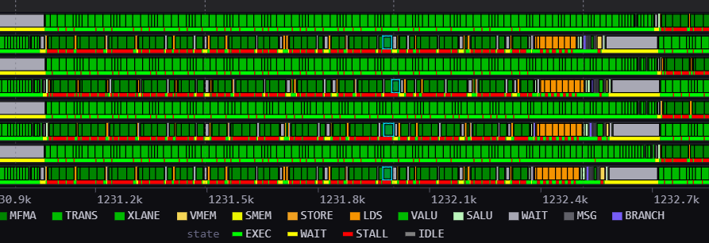
v_exp → add → v_rcp chain),
followed by an orange LDS/STORE burst (K/V staging) and a long grey WAIT at the barrier. One repeating period is roughly 1.8k cycles on the time axis (read off the screenshot, approximate).3. The trick: a table lookup instead of exp + add + rcp
Phase V computes σ(g) = 1/(1+2g) with two quarter-rate transcendentals and an add. σ is a smooth, bounded function of a single scalar, so tabulate it in LDS and read it:
p = g * LUT[ index(g) ] # sigma comes from ds_read_b32; the multiply by g stays
Phase V then contains zero transcendentals. The instruction count goes up (146 → 242) but the issue floor falls, because quarter-rate ops are gone:
before 64 × 16 cy (exp, rcp) + 80 × 4 cy (full rate) = 1344 cy after 0 × 16 + 176 × 4 = 704 cy
Result: the ping-pong forward goes from 1.269x (before the LUT) to 1.59x (final) over the shipping FlyDSL kernel, accuracy unchanged (§8). It was the largest single win of the whole optimisation effort; the final kernel also includes the address-math and read-pipelining refinements of §5–6.
Why the table only has to be good to 2−8
The gate output goes through pack_p, which truncates p to bf16 to feed GEMM2's A operand. bf16 has 8 bits of precision, so every element already carries up to 2−7 = 0.78% relative error whatever the gate does.
A replacement therefore needs ~2−8, not f32's 2−24 — a ~65,000x relaxation. Since p = g·σ with g exact, the relative error of p equals that of σ.
Measured: max error vs the fp32 oracle is 1.221e-04 on every mask configuration, bit-identical to the exact gate. The table's error sits under a floor that was already there.
Sizing the table
Nearest-node lookup with step h: the worst case is half a step from a node. With σ′ = −ln2 · σ(1−σ):
It is worst as σ → 0 (large positive g, where 1−σ → 1), giving ln2 · h/2 = 2−8 ⇒ h = 0.01127. A bisection over 4M samples gives 0.01125, so the closed form is right, not a fit.
| choice | value | reason |
|---|---|---|
| step h | 0.01125 | node error ≤ 2−8 |
| range | g ∈ [−8, +16] (span 24) | g < −8: 1−σ < 2−8, the clamp error stays inside the same budget. g > 16: σ < 2−16, the absolute error of p is bounded and far below the bf16 noise of the output accumulator |
| entries / bytes | 2135 × 4 B = 8540 B | LDS 18432 → 26976 B; still 1 WG/CU, so occupancy is unaffected |
| index bias | +0.5 node | so truncation behaves as round-to-nearest |
The binding constraint is the large-positive-g tail, where p is tiny. At g≈0, where σ actually curves, half the resolution would do. If accuracy were judged by absolute error vs peak |p| (what the accuracy test checks), the table could shrink a lot — but 2135 is the defensible size without knowing the real score distribution.
The clamp is the saturating branch, not a safety check
The index is clamped to the table (v_med3_f32), but g in the outer multiply is not. For a strongly passing score (g → −∞): the index sticks at node 0, σ ≈ 1, and the surviving multiply gives p = g · 1 = g, the correct answer at any magnitude (g = −3455 → p = −3441.6, 0.4% off, inside the budget).
Why not tabulate p(g) directly and drop the multiply? σ is bounded; p is not. A p-table clamps to a constant and is wrong by |g|: at g = −20, −100, −3455 it returns −7.97. Patching it costs a compare and a select, two instructions to save one multiply. The multiply that survives is what makes the clamp correct. A masked score has g = 0, so p = 0 · σ = 0 exactly: masked elements stay exactly zero whatever the table says.
p(g) = g·σ(g): exact (white), σ-table with clamp then multiply (green, indistinguishable from exact), p-table with clamp (red, goes flat below g = −8).
Building the table
Each workgroup fills the table itself in LDS, using the exact exp2/rcp, before the prologue's publish fence: 5 rounds across the 512 threads, amortised over the ~270 KV tiles that follow. No host table, no extra kernel argument.
Surplus threads in the last round write the (identical) last entry instead of branching: a store inside a dynamic if breaks FlyDSL's AST rewriter, and the clamped index makes the redundant stores benign.
4. Interactive: what the gate does to one score
5. Making the address cheap: the magic-number trick
The first version needed four instructions per element to form the address:
v_fmamk_f32 t, g, 1/h, bias # t = (g - g_lo)/h + 0.5 (fractional node index) v_med3_f32 t, t, 0, N-1 # clamp v_cvt_i32_f32 i, t # truncate to node index v_lshlrev_b32 a, 2, i # byte address = i*4
The obvious fix is to fold the ×4 into the fma (scale by 4/h). It does not work: trunc(4x) ≠ 4·trunc(x). It gives an address inside an entry, and masking it back costs the op you saved.
Let the exponent do the scaling
An f32 in [221, 222) is 221 + m/4, where m is the 23-bit stored mantissa. The spacing of floats there is 0.25, so the mantissa field is the offset from 221 counted in quarters: it already equals 4 × node index, exactly the byte address of a 4-byte table entry.
So bias the fma into [221, 222), clamp in that domain, and the address is one mask away:
mask 0x7FFFFC = 0 00000000 11111111111111111111100 (strip exponent, clear the 2 sub-node bits)
v_fmamk_f32 t, g, 1/h, 2^21 + 711.5 # bias into [2^21, 2^22) v_med3_f32 t, t, 2^21, 2^21 + N-1 # clamp IN THE BIASED DOMAIN v_and_b32 a, t, 0x7FFFFC # byte address -- convert and shift are both gone ds_read_b32 sigma, a
The source writes the element index (bits >> 2) & 0x1FFFFF and lets the LDS view scale it; the backend folds >>2, & and the view's ×4 into a single v_and_b32. Check the ISA rather than assuming: written naively it looks like 3 ops replacing 2.
Phase V: 225 → 193 instructions (exactly −32), VALU floor 704 → 576 cy, 104.41 → 101.07 ms (−3.3%).
Why 221 and not the textbook 223
| magic | ULP | mantissa holds | to get a byte address |
|---|---|---|---|
| 223 (textbook float→int) | 1 | index | needs m << 2 — one op worse |
| 221 | 0.25 | index × 4 | already there |
| 219 | 0.0625 | index × 16 | needs m >> 2 |
The entry size dictates the constant (a 2-byte table wants 222, an 8-byte table 220).
The cost
The bias must itself be representable in [221, 222), i.e. a multiple of 0.25. The ideal bias 711.611 snaps to 711.5, so the rounding point jitters by ±0.125 node. Max relative error of σ goes 3.906e-3 → 3.998e-3 (2% worse) against bf16's own 7.812e-3 truncation floor, so end-to-end accuracy does not move (still 1.221e-04). The neighbouring quarters (711.25, 711.75) are 50% worse for nothing.
Preconditions if you reuse it: fewer than 221 entries; the clamp must be in the biased domain (an out-of-range value has a different exponent and the mask returns garbage, so the clamp is load-bearing twice); the entry size fixes the constant.
6. The new bottleneck: ds_read latency
With the transcendentals gone, the gate is a stream of address math plus 32 LDS reads per lane. How the reads are grouped decides how much cover each wait gets. Three ideas, together worth a few percent:
- Issue all reads before consuming any. Gating the whole tile as one batch lets the first
s_waitcntcover many multiplies instead of one (−1.5%), and is free in VGPRs because the address register is reused for the loaded σ. The batch size is non-monotonic, so sweep it. - Software-pipeline the gate. Put the second group's address math between the first group's reads and their consumers, and finish (multiply and pack) one group before touching the other.
- Make the first group small. An uneven split (8 + 24 rather than 16 + 16) cut the waits from 9 to 3: the small first group only needs a few reads to land, and the other 24 drain under its multiplies.
Even so, ds_read_b32 measures ~10 cy/op against phase M's 4.6. Most of that is not recoverable time: ATT's stall is per wave, and while this wave waits the partner wave in phase M keeps issuing. Only the 1.5% above was real.
The address math also cannot move into the previous phase V: g comes from GEMM1 in the M phase just before it, so the scores do not exist yet.
Bank conflicts: easy to measure wrong
LDS has 32 banks × 4 B. Within a half-wave, different banks are free, the same address is a broadcast (free), different addresses in the same bank serialise. With indices spread over a large table, lanes land in banks like balls in bins: expected max occupancy 3–4, not 32. Maximal conflict needs the opposite of random: a structured stride that is a multiple of 128 B.
| experiment | measured | why it was an artifact |
|---|---|---|
control #1: index from the score's mantissa, read k_smem[r,0,:] | 73 cy/read, 2.7x slowdown | the K row stride is 128 B = 32 dwords, so every lane hit bank 0 at 32 different addresses: a guaranteed 32-way conflict no real 4-B table has |
| control #2: value-derived index, benchmark inputs U(−0.01, 0.01) | ~0 cy/read | |g| ≤ 0.3 is ~2.5% of the table (about 54 of 2135 entries), so 64 lanes crowd into a few adjacent dwords: near-broadcast by construction |
| real: scale q/k until the index spreads | worst case 1.13x on the LDS step | at the middle scale (whole table hit); improves again at larger scales as scores clamp to the ends and broadcast. Error stays under 1%, 0 NaN |
Methodology lessons: a subtraction model (total delta minus added VALU) gave a negative read cost, so use a three-way A/B with a no-read control that keeps the index math; when building "remove X" controls watch for dead-code elimination (a control that dropped two of four values let DCE delete half the gate and measured a fake −18.3%); verify every control in the ISA. Also keep a stable in-process control: a machine drifting 3–5% between runs manufactured a false null for a real 1.5% effect.
Open risk: real HSTU score distributions are unmeasured; the 1.13x worst case came from artificially scaled synthetic inputs.
7. What else was tried instead (and why the LUT won)
| idea | verdict | why |
|---|---|---|
| Interpolated table (value + slope, 96 entries, 768 B) | +21% slower | adds v_fract + v_fmac per element (+256 cy issue floor); the 24x smaller table buys nothing because conflicts were already near-free. When a lookup is ALU-bound, spend table bytes to buy instructions, never the reverse. Direct nearest-node: 104.43 ms; lerp: 126.45 |
| Direct p-table (drop the multiply) | wrong | p is unbounded, a clamped p-table is off by |g|; the fix costs more than the multiply it saves (§3) |
| Schraudolph bit-trick exp2 | 1.320x | removes 1 transcendental per element; the LUT removes 2 plus the add and reaches 1.391x. They are mutually exclusive (both replace exp2) |
Batch inversion for rcp | 8–12% slower | only 4 cy/element of headroom (full:quarter rate is 4:1); normalising costs more than the saving and the serial prefix-product chain replaces 32 independent reciprocals |
gfx942 packed FP32 (v_pk_add/mul_f32) | 16% slower | a packed op is a join: it waits on both halves' producers, halving the independent chains (same finding as the backward gate) |
| Removing one of the two barriers | 14% slower | the barrier is the ping-pong's arbitration, not overhead; the groups drift out of opposite phases |
| 32x32x8 MFMA instead of 16x16x16 | no gain | matrix time identical at 1024 cy, and the 32x32 accumulator layout breaks the operand swap that keeps P in registers |
| MFMA for the bf16 pack | no | no packed-bf16 MFMA destination on gfx942; and 4 cy/result is the same as v_perm_b32 |
8. Results
Four stages: shipping, ping-pong, optimised, final
The shipping FlyDSL forward is the fixed reference (the LUT and everything else below only touch the ping-pong kernel). B=1024, H=4, N=16384, d=64, hstu mask. Speed-ups are over the shipping kernel on the same machine.
| # | stage | what changed | speed-up over shipping | ms: node A | ms: node B |
|---|---|---|---|---|---|
| 1 | shipping kernel (128,32,4,2) | the existing non-ping-pong forward | 1.00x | 144.25 | 134.6 |
| 2 | apply the ping-pong framework | 8 waves / 1 WG per CU, half-iteration skew + s_setprio, GEMM2 one tile behind (rotation), K/V staging split between the two groups, vectorize-slp=False, tile (384,64) | 1.03x | — | — |
| 3 | optimise, before the LUT (512,32,8,2) | packed bf16 via v_perm_b32; α·−log2e folded into Q; staging fixes (carried address, hardware bounds check, zero-guard at the consumer, rotated V double-buffer); rolling MFMA operand window; per-column / per-row-border mask and skipping the gate on blocks the diagonal never reaches | 1.269x (−21.2%) | 113.67 | — |
| 4 | final kernel | sigma LUT in LDS (§3), magic-number addressing (§5), gate read pipelining 8+24 (§6), staging-store interleave | 1.59x | — | 84.8 |
“—” = not measured on that node; ms are never derived by dividing across machines. Stage 2 is a ratio from an earlier same-process A/B (141.9 vs 146.3 ms), which is why only the ratio is shown.
v_exp → add → v_rcp chain); period roughly 1.8k cycles.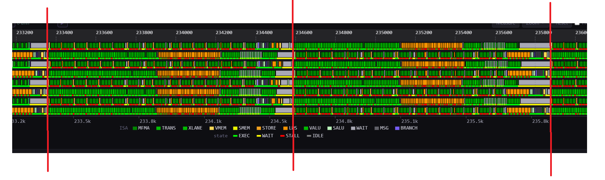
ds_reads per lane
(plus the staging stores) that replaced the transcendentals.ds_read · with the unchanged multiply (+4): 16 cy per element · 0 transcendentals, 4 VALU ops (all full rate)The exp / add / rcp trio (red) is replaced by three cheap address ops and one LDS read (green + orange). The same four VALU slots are still spent per element, but none is quarter-rate, so the issue cost of the replaced part drops from 36 to 12 cy (40 to 16 cy per element including the shared multiply). Across the 32 elements a lane gates per phase (including the half-pack per element) that is the 1344 → 576 cy floor below.
| per phase V (per wave, 32 elements per lane) | before LUT | after LUT |
|---|---|---|
| instructions | 146 | 242 → 193 (magic) → 181 (8+24 split) |
| issue floor | 1344 cy | 704 → 576 cy (−57%) |
| transcendentals | 64 | 0 |
| LDS | 18432 B | 26976 B (+8540 B, occupancy unchanged) |
| VGPR / spills / WG per CU | 244 / 0 / 1 (unchanged) | |
| max err vs fp32 oracle | 1.221e-04 (identical, every mask config) | |
Final: ping-pong forward vs FlyDSL, CK and H100 CUTLASS
MI300X, hstu mask, N=16384, d=64, ms. "current FlyDSL" is the shipping non-ping-pong forward.
| hstu mask | ping-pong | current FlyDSL | pp speed-up vs FlyDSL | CK | H100 CUTLASS | pp / H100 time |
|---|---|---|---|---|---|---|
| B=1024 H=4 | 84.8 | 134.6 | 1.59x | 154.5 | 88.3 | 0.96x |
| B=1024 H=8 | 168.5 | 273.6 | 1.62x | 308.7 | 176.6 | 0.95x |
| B=120 H=4 | 11.9 | 18.7 | 1.57x | 20.7 | 10.6 | 1.13x |
| B=120 H=8 | 22.8 | 36.5 | 1.60x | 40.0 | 22.2 | 1.03x |
Speed-up column computed from the two columns before it (1.57–1.62x). pp / H100 < 1 means the MI300X ping-pong forward is faster than H100 CUTLASS (training shapes); > 1 is slower (small inference shapes). The H100 figures are from a different machine, so indicative rather than a controlled comparison. This is the whole ping-pong kernel: the sigma LUT is the largest single contributor, on top of v_perm packing, folding α·−log2e into Q, mask simplification and the staging changes.
9. Takeaways
- Find which unit is the bottleneck before you copy a schedule. The backward is MFMA/latency-bound; the forward is VALU-bound, so ping-pong alone gave 1.03x and the real lever was shrinking the gate.
- More instructions can be faster. The LUT gate went from 146 to 242 instructions and still got faster, because the issue floor counts cycles, and quarter-rate transcendentals are 4x a normal op.
- Judge accuracy at the point where the error comes to rest. The bf16 pack already costs 2−7, so a table good to 2−8 is free, and the accuracy result was bit-identical.
- Clamp the index, never the multiplicand. The multiply by g that stays behind is what makes a bounded table right for an unbounded p.
- Let float formats do your integer math. A magic exponent made the mantissa the byte address and removed two instructions per element.
- Measure the memory side honestly. Two bank-conflict controls were artifacts (an accidental 128 B stride; a clustered index). Scale the inputs until the index spreads, verify controls in the ISA, and keep an in-process drift control.
Ping-pong on a gather-bound kernel: GLM-5.3-Flash sparse MLA prefill
zhuo/pp-glm53-sparse-mla (aiter/ops/flydsl/kernels/sparse_mla_pp.py).
Yash's kernel: ROCm/aiter, branch ws/glm53-sparse-mla-flydsl.1. The workload
Sparse MLA prefill. Each query token attends to only its top-k = 2048 most relevant past rows, picked by an indexer, so the kernel gathers 2048 scattered 1 KiB rows per token from a big KV pool. MLA stores one 512-wide latent row per past token that serves as both key and value, and all H = 16 heads of a token read the same rows.
out = Σj softmax(s)j · kv[idxj] (D = 512, bf16: one row = 1 KiB)
The kernel walks the list in tiles of 16 rows (128 tiles per token) with an online softmax: running max m, running sum l, accumulator acc, and a lazy rescale (the stale max is kept until a score exceeds it by τ = 8 in log2 units, so the 512-wide accumulator is almost never rescaled). Per tile there are two matrix products with a softmax between them, and PV cannot start until the softmax of the same tile is done:
QK ST = K_tile · QT # 16 rows x 16 heads, MFMA; computed transposed so P feeds PV with no shuffle softmax P = exp(S - m) # VALU PV acc += P · V_tile # 16 x 512 update, MFMA; V = the same rows, needed TRANSPOSED (rows as the K dimension)
Per (token, tile): 64 MFMAs (32 per wave when two waves split D in halves), one 16 KiB gather, and a 64-byte index load that is on the critical path.
2. The production regime: a 4 GiB pool, a 128 MiB working set
From the GLM-5.3-Flash serving log (vLLM, MI325X, TP4, 16K-token prefill chunks, prefix caching off): the KV pool is 3640 pages × 1152 rows = 4,193,280 rows (4 GiB), but a chunk only touches its own request's prefix, ≤ 131K rows = 128 MiB, in ~114 pages scattered over the pool. Every token has its own top-k list (no sharing between neighbouring tokens).
So although the kernel appears to fetch 2048 × 16384 = 33.5 M rows (34.4 GB), they are drawn from 131K rows. Compulsory HBM traffic is 128 MiB, about 22 µs at 6 TB/s, so HBM bandwidth is not the bottleneck. The data path is HBM → Infinity Cache → L2 → L1 → LDS, and the limit is the Infinity-Cache bandwidth and the L2 hit rate. (The measured effective bandwidth, 6.5–9 TB/s, exceeds the HBM peak for exactly this reason.)
Benchmark ("paged"): the full 3640 × 1152 pool, one 131K-token request on 114 randomly placed pages, chunk = the last T = 16384 positions, causal top-k of 2048 rows per token, cache flushed, fp32-oracle checked (max err 1.23e-3). Run on the ping-pong branch with (times the ping-pong kernel against Yash's, both checked against an fp32 oracle):
python3 op_tests/op_benchmarks/flydsl/bench_sparse_mla_pp.py
Yash's kernel on its own branch:
python3 op_tests/test_flydsl_sparse_mla.py --suite performance -t 16384 --order logical topk -s 0 1
Target: with no shared rows, beat 10.36 ms and get close to 5.7 ms.
Reuse of identical top-k lists across tokens (which some serving runs show) is a separate path handled by the Q-block kernel; this page is the one-list-per-token case (G = 1), which is what the real-model A/B hit.
3. The baseline: the one-query kernel is latency-bound
One token per workgroup, 2 waves, 4 WGs per CU (so 2 waves per SIMD, from four unrelated WGs). The two waves split D in halves (wave 0: d < 256, wave 1: d ≥ 256) for both products. Per tile:
1 wait for this tile's rows (loaded during the previous tile); write them to LDS 2 barrier 3 load the NEXT tile's 16 row numbers (idx), WAIT for them, then issue the next gather 4 QK on my half of D -> partial scores S_lo / S_hi 5 write partial to LDS, barrier, read partner's partial, add -> full S 6 softmax -> P 7 PV on my half of D 8 barrier
Measured cost of one tile (one wave, cycles):
| part | cycles |
|---|---|
| whole tile (median) | 4,640 |
| waiting for the 64-byte index load (step 3) | 1,804 |
| waiting for the gathered rows (step 1) | 568 |
| three barriers | ~360 |
| waiting for LDS to drain before barriers | ~240 |
| actual matrix work (32 MFMAs × 16 cy) | 512 |
The matrix core is busy only ~18% of the time and the waves spend ~65% waiting: a chain of dependent waits per tile (index → gather → barrier → exchange → barrier), and the two waves on a SIMD often wait at the same moment. That is the lockstep problem from page 1, except here the slack is memory latency (a gathered row takes ~2000 cy, an index load ~1800 cy), not the VALU.
4. The ping-pong design
Same recipe as pages 1–3: one 8-wave workgroup per CU, two groups of four waves (g0 = waves 0–3, g1 = waves 4–7), one wave of each per SIMD, held half an interval apart by one extra barrier. Every interval is one of two phases, and the interval length is I = max(tM, tV):
- Phase M (matrix): the MFMAs, with their operands already in registers.
- Phase V (everything else): partial-score exchange, softmax, the V transpose, and issuing the future gathers and index loads.
What is different from the HSTU kernels
- The two groups share nothing. A workgroup is 4 tokens: g0 handles tokens a and b, g1 tokens c and d, each token on a pair of waves that split D. Different tokens, different rows, different LDS regions, so the barrier only keeps time and never has to protect data passed between groups (no cross-group race, unlike the backward).
- PV runs one tile behind, as in the forward: M(t) = PV(t−1) + QK(t), 16 + 16 = 32 MFMAs per wave, all operands in registers. V(t) = exchange partials, softmax(t) → P(t), build VT, issue the gather for a later tile. The cost is two live tiles per token.
- Each wave gathers only the D-half it uses, straight into the MFMA operand layout (lane r = row slot, 8 numbers = two MFMAs' worth). K goes from memory directly into QK: no LDS for QK, no barrier to share the tile, and the lane's own copy of the row index replaces the
v_readlanebroadcast. LDS is needed only for the transpose PV requires. - Budgets are tight: 8 waves × 8 KiB = exactly 64 KiB LDS in the first design, ~220 of 256 VGPRs per wave, and above 128 VGPRs no second 8-wave WG fits on the CU, which guarantees the one-WG-per-CU the barrier needs.
The price, and the balance check
One WG per CU removes the co-resident WGs that covered each other's stalls. Measured for the lockstep 8-wave control (same kernel, no skew): +10–12%. Phase M is 32 MFMAs = 512 cy of matrix time; in the first design phase V moved 68 KiB through the CU's one LDS unit, at least 544 cy. The two are close by construction, so max(tM, tV) wastes little if nothing waits for memory.
The whole question is therefore whether the gather can be fed fast enough.
Prefetch distance is the real constraint
A gathered row arrives ~2000 cy after it is requested (~3000 for the slowest 10%). By Little's law, throughput = bytes in flight / latency: to consume one 16 KiB tile for each of 4 tokens every ~2000 cy the CU needs ~64 KiB in flight, which is one tile per wave and exactly what the register budget allows. Going faster needs either more registers or a design that frees them (this is why later rungs shrink the register footprint).
Indices are the other chain: each token's list is read 64 B per tile and is in no cache, so its ~1800 cy latency is hidden only by keeping several tiles of indices in flight (one register per tile).
5. First result, and the first trace
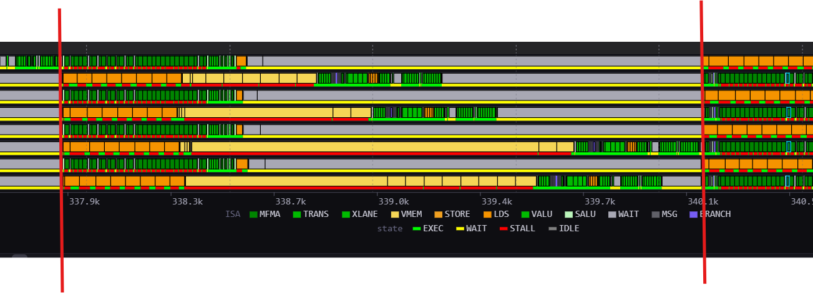
| first version, MI300X, median µs | one_q | fly_pp | ratio |
|---|---|---|---|
| paged T=16384 (interleaved A/B) | 6724 | 6546 | 0.974 |
| uniform 128 MiB, T=1024 | 347 | 428 | 1.23 |
| uniform 128 MiB, T=37 | 161 | 320 | 1.99 |
| uniform 4 MiB (L2-resident), T=16384 | 3949 | 5320 | 1.35 |
Bitwise identical to the one-query kernel; 249 VGPR, 0 spills, 64 KiB LDS, 1 WG/CU. The ping-pong only pays at full occupancy on the paged pattern: below ~3 WGs/CU (T < ~4K) the 4-token WGs leave CUs idle, and when the data is L2-resident the matrix work is exposed instead of hidden.
6. The optimisation ladder
Paged T=16384, topk=2048, G=1. Everything is bitwise identical to the one-query kernel. The steps fall into three groups:
| group | what was done | pp / one_q |
|---|---|---|
| Make phase M cheap | Build VT in phase M with identity MFMAs on the registers that already fed QK (x·1.0 is exact) instead of an LDS write + transposed read in phase V; park some Q fragments in LDS to pay for the extra live registers (otherwise it spills); spread the gather loads through the softmax instead of one burst; keep the packed-FP32 vectoriser off. | 0.974 → ~0.95 |
| Make the gather efficient (the real bottleneck) | Hardware counters showed the gather bound inside the CU: in MFMA operand order the four lanes reading one row are 16 lanes apart, so the address unit cannot merge them and L1 spent 65% of its time on tag conflicts. Fix: a coalescable gather (consecutive lanes read consecutive chunks of a row) followed by ds_bpermute into MFMA order, with the permutes interleaved one-by-one with the MFMAs so the matrix core never waits for all of them. Then gather only one tile ahead into the register buffer M just drained: more cycles, but fewer VGPRs and a higher clock under the power cap. | ~0.95 → 0.815 |
| A steady stream of loads in both phases (an idea from Yash's kernel) | Issue half of the next tile's gather in phase M, each load right after the permute that frees its register, the other half in phase V. Both groups now issue loads in both phases, one every few MFMAs, instead of V-only bursts. | 0.618 (MI325X) |
| More tricks from Yash's kernel | Immediate-offset gathers (one base register per gathered row, the chunk offset in the load's immediate field, so no per-load address VALU); the VT packs pinned in phase V so the compiler cannot sink them into the MFMA burst; the freed registers keep more Q fragments out of LDS. | a further 0.978x (MI300X) |
| Neutral | Spreading the parked-Q reads through the burst; an XCD-aware token remap so concurrent workgroups on one L2 take adjacent tokens (neutral on synthetic lists, aimed at real indexer output). | ~1.00 |
The load-stream step on other setups (MI325X, flydsl 0.5.0): paged 2 requests 4433 → 4068 (0.918); shuffled lists 6248 → 6366 (1.019, slightly worse); uniform 4 GiB (HBM-bound) 7370 → 8337 (1.131, a regression): there the loads stall at issue and in M a stalled load blocks the MFMAs behind it.
Paged T=16384, pp time / one_q time (lower is better); each bar uses the one_q of the same A/B. The last bar is MI325X (one_q 6175 µs), the earlier ones MI300X.
7. Why the gather is the limit: counters, power cap, and what did not work
After the coalesced gather (measured with hardware counters)
| pp (coalesced) | pp (not coalesced) | one_q | |
|---|---|---|---|
| L1 tag-conflict stall | 0.6% | 64.9% | 0.5% |
| L1 pending on L2 | 60.9% | 6.9% | 71.3% |
| tag lookups per load | 15.4 | 57.7 | 15.4 |
| L2 hit rate | 36% | 42% | 13% |
With the conflicts gone the stall moves to the next level: the L1 is waiting on L2 returns (one request per 128 B line, L2 → fabric read latency ~385 cy, no credit stalls). The bound is L1 miss capacity × L2/MALL latency (Little's law), so issue order, prefetch depth and coalescing cannot push it further. The phase-arrival data caps any fix to the load stall at ~13% before phase M becomes the limit (M and V are both ~1400 cy; V arrives last at 69% of barriers, by ~212 cy).
The kernel runs at the power cap
Every variant, even a gather-only kernel with no math, draws the stock 750 W, and sclk drops to 1.2–1.7 GHz (one_q 1.21, 8-wave ping-pong 1.34, gather-only 1.71). The gather costs a roughly constant ~9–10 M shader cycles. So wall time = (nearly fixed cycles) / clock, and the real metric is energy per tile: a schedule that saves cycles but adds power nets out to nothing (that is why prefetch_depth=1 won with more cycles, and why VT-by-MFMA won only 3.5% despite 12% fewer cycles).
Locality matters too: in an earlier build the L2 hit rate on the paged pattern was 45% for pp vs 13% for one_q (36% after the coalesced gather), but the hits come from the sorted synthetic lists being walked at the same pace (same ~1K-row window per tile step), not from neighbouring tokens. Shuffle the lists and pp falls to 7% hit and is 1.056x slower than one_q. Whether vLLM's index lists are sorted is an open question.
Measured and rejected
| experiment | result | why |
|---|---|---|
| 8-wave lockstep control (no skew) | +10–12% | the entry fee of one WG per CU, before any ping-pong |
| D-split row-per-lane gather in the one-query kernel | 1.06x slower | 16 half-used lines per dwordx4: par at MALL, 2.5x slower when L2-resident |
| VT re-gathered from memory | 1.5–1.8x slower | doubles the gather |
| 1 token per WG, D in eighths (2 WG/CU) | 1.11x slower than the 4-wave kernel | per-WG overhead (prologue, drain trip, epilogue, slot gap ~5.5%) paid per token, plus a 2.7% lower clock |
KV load cache bits: sc1 / nt | 1.06x / 1.95x | sc1 doubles L1→L2 requests; nt pushes every gathered byte across the fabric (latency 680 cy, sclk 1.13 GHz) |
Q fragments kept in registers (q_lds=0) | 1.04x | fits in 255 VGPR but loses |
Moving the M-phase vmcnt waits around | 0–2% | the gather/clock bound just reappears elsewhere |
8. Traces: what moved
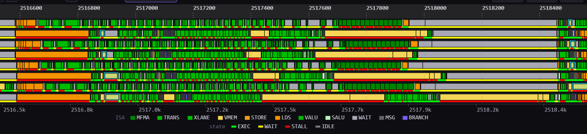
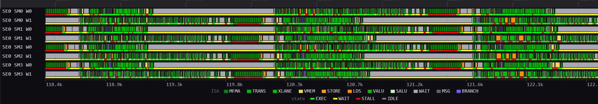
9. Results
Ping-pong vs the one-query kernel
| date, machine (flydsl) | one_q µs | fly_pp µs | speed-up | effective TB/s (pp) |
|---|---|---|---|---|
| 11-09, MI300X (0.3.4.1), first version | 6692 | 6498 | 1.03x | 5.37 |
| 11-11, MI300X (0.4.2) | 6636 | 5405 | 1.228x | 6.46 |
| 11-11, MI325X (0.4.2) | 6175 | 5010 | 1.232x | 6.97 |
“TB/s” is logical bytes (34.4 GB) / time, so values above the ~6 TB/s HBM peak mean the Infinity Cache is serving the gathers.
Final: ping-pong vs the one-query kernel (MI325X)
| MI325X, flydsl 0.5.0, paged T=16384, topk=2048 | median µs | min µs | TFLOP/s | effective TB/s | speed-up vs one_q |
|---|---|---|---|---|---|
one-query kernel (fly_one_q) | 6175 | — | — | — | 1.00x |
ping-pong (fly_pp, with the load stream) | 3836.9 | 3783.0 | 286.6 | 9.09 | 1.61x |
Passes the fp32 oracle (max |err| 1.23e-3). Effective TB/s is logical bytes (34.4 GB) over time, so 9 TB/s means the Infinity Cache serves most of the gathers. The last ladder step (more of Yash's tricks) takes a further ~2% off on MI300X.
Against Yash's kernel
Yash's kernel (flydsl_sparse_mla_fwd) is a non-ping-pong design: one wave per token over the full D = 512, AGPR accumulators, no LDS on the register-VT route. It gets rid of the waits outright rather than overlapping them.
The two kernels traded ideas in both directions (the steady load stream and the immediate-offset gathers came from his kernel into the ping-pong one), and the ping-pong kernel was briefly ahead.
Yash's latest kernel is about 5% faster than the final ping-pong kernel. The trace above suggests why: the ping-pong period is now ~2 × phase M, and the barrier that keeps the skew also makes every wave pay for it, while the one-wave-per-token design has no barriers at all.
10. Takeaways
- Ping-pong also works when the slack is memory latency, not VALU. The skew turned the exposed index/gather waits into overlap: ~18% matrix-core utilisation in the one-query kernel, and a 1.23x speed-up from the schedule plus gather work.
- But the schedule is only the structure. The first version was 0.974x; almost all the gain came from making the gather efficient: coalescable loads so the L1 stops tag-conflicting (0.944x), interleaving the fix-up with the MFMAs (0.917x), and spreading loads through both phases (0.749x on MI325X).
- Read the counters, not just the trace. The stall was inside the CU (TA 95% busy, 65% tag conflicts), not in the fabric. After the fix it moved to L1-waiting-on-L2, and further issue-order games bought nothing.
- On a power-capped part, judge by energy per tile. The depth-1 prefetch needed 7% more cycles and still won, through a higher clock; fewer-cycles changes can lose the same way.
- Ping-pong is not the only way to hide waits, and here not the fastest. Yash's barrier-free, one-wave-per-token kernel ends up ~5% faster. The ping-pong version has the clearer structure and is easier to reason about in a trace, and the best ideas moved across: his steady stream of loads cut the ping-pong kernel's time by 25% on MI325X (5096 → 3814 µs).
- Check the regimes it does not help. Ping-pong needs full occupancy (T > ~4K); it regresses for tiny T, L2-resident data, shuffled lists and the HBM-bound 4 GiB uniform stress case.